Pengertian Pohon Keputusan¶
Pohon yang dalam analisis pemecahan masalah pengambilan keputusan adalah pemetaan mengenai alternatif-alternatif pemecahan masalah yang dapat diambil dari masalah tersebut. Pohon tersebut juga memperlihatkan faktor-faktor kemungkinan/probablitas yang akan mempengaruhi alternatif-alternatif keputusan tersebut, disertai dengan estimasi hasil akhir yang akan didapat bila kita mengambil alternatif keputusan tersebut.
Manfaat Pohon Keputusan¶
Pohon keputusan adalah salah satu metode klasifikasi yang paling populer karena mudah untuk diinterpretasi oleh manusia. Pohon keputusan adalah model prediksi menggunakan struktur pohon atau struktur berhirarki. Konsep dari pohon keputusan adalah mengubah data menjadi pohon keputusan dan aturan-aturan keputusan. Manfaat utama dari penggunaan pohon keputusan adalah kemampuannya untuk mem-break down proses pengambilan keputusan yang kompleks menjadi lebih simpel sehingga pengambil keputusan akan lebih menginterpretasikan solusi dari permasalahan. Pohon Keputusan juga berguna untuk mengeksplorasi data, menemukan hubungan tersembunyi antara sejumlah calon variabel input dengan sebuah variabel target. Pohon keputusan memadukan antara eksplorasi data dan pemodelan, sehingga sangat bagus sebagai langkah awal dalam proses pemodelan bahkan ketika dijadikan sebagai model akhir dari beberapa teknik lain. Sering terjadi tawar menawar antara keakuratan model dengan transparansi model. Dalam beberapa aplikasi, akurasi dari sebuah klasifikasi atau prediksi adalah satu-satunya hal yang ditonjolkan, misalnya sebuah perusahaan direct mail membuat sebuah model yang akurat untuk memprediksi anggota mana yang berpotensi untuk merespon permintaan, tanpa memperhatikan bagaimana atau mengapa model tersebut bekerja.
contoh pembuatan programnya adalah sebagai berikut
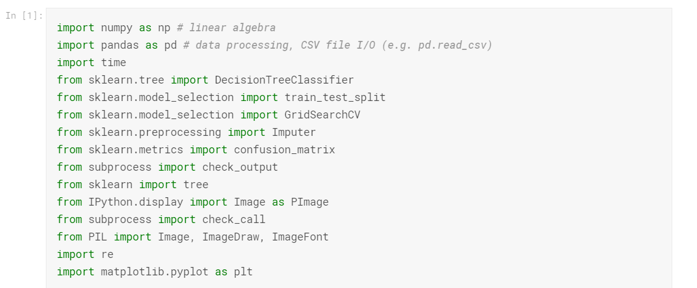
Untuk codingan diatas berfungsi sebagai meload/menggunakan library yang akan dipakai untuk perhitungan pohon keputusan.
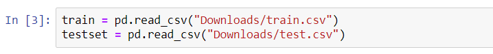
untuk codingan diatas ialah sebagai pembaca dataset yang kita gunakan pada pohon keputusan ini
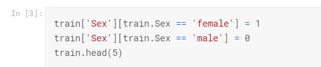
kita rubah gender menjadi angka binary terlebih dahulu agar mudah dalam pencarian
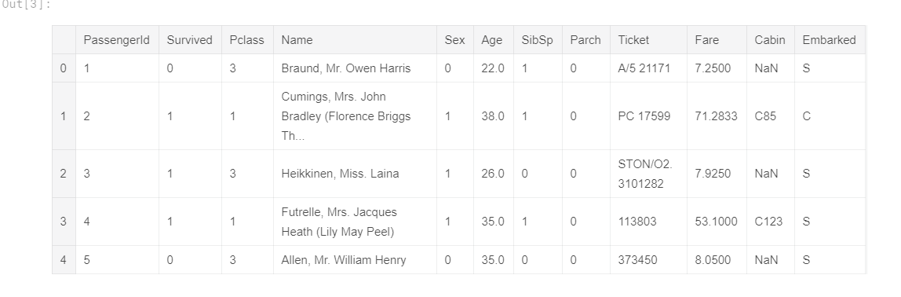
hasilnya setelah dirubah
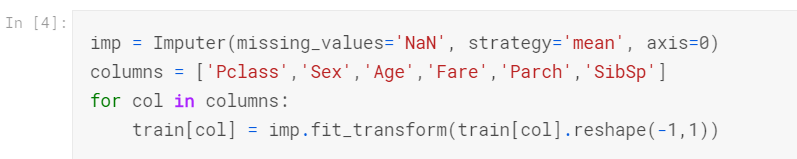
gunakan imputer sklearn baru untuk merubah entri yang kosong
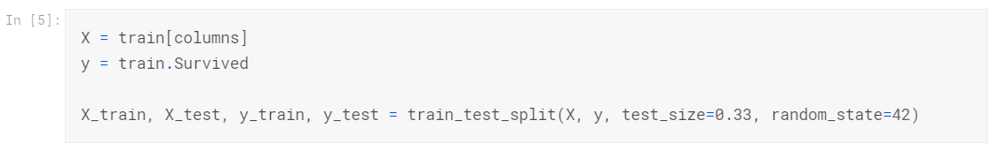
memisah data ke data pengujian dan data percobaan
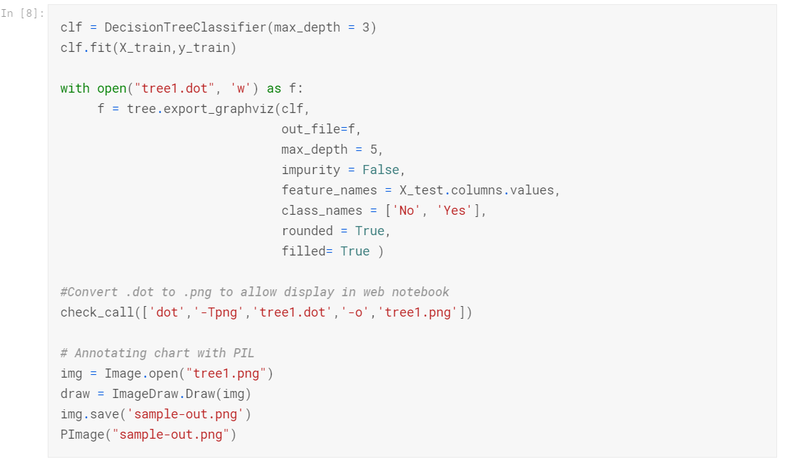
Biasanya, pohon keputusan memilih untuk membagi setiap node pada titik optimal (berdasarkan pada ketidakmurnian gini atau perolehan informasi entropi). Namun, akan lebih cepat, dan mungkin tidak jauh lebih buruk, untuk menggunakan split acak
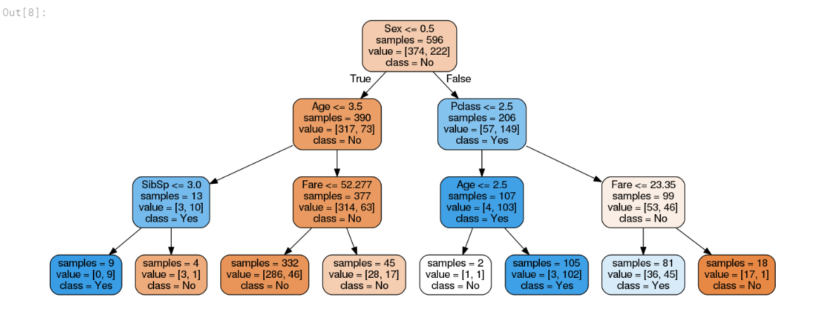
Di setiap node, algoritma mencari fitur dan partisi yang akan menghasilkan hasil terbaik. Menggunakan tombol max_feature, kita dapat membatasi jumlah fitur yang harus dipertimbangkan. algoritma akan secara acak memilih jumlah fitur (berdasarkan batas) dan hanya kemudian memilih partisi terbaik dari kohort baru.
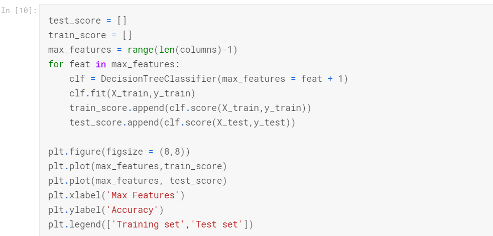
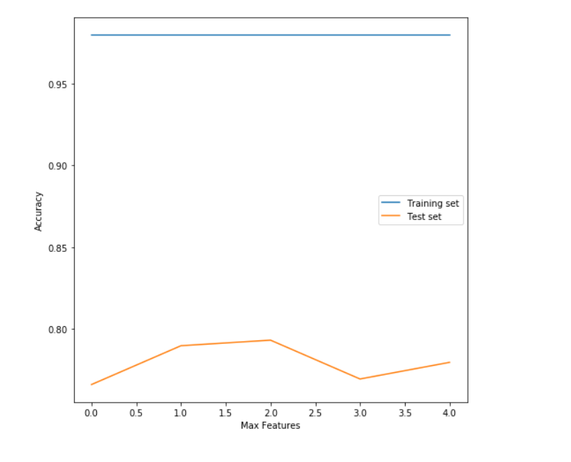
perhatikan bahwa skor pelatihannya konstan dan mendekati 100%, sementara skor validasinya jauh lebih rendah. ini jelas merupakan kasus over-fitting. Ini karena kami belum membatasi kedalaman pohon. oleh karena itu, ia terus membuat kenop baru sampai semua daun "murni" (yaitu, hanya diisi oleh sampel yang diberi label 1 atau 0, tetapi tidak keduanya).
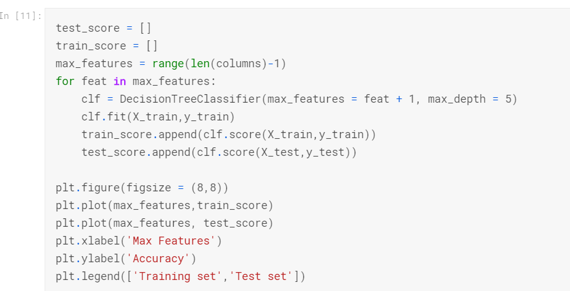
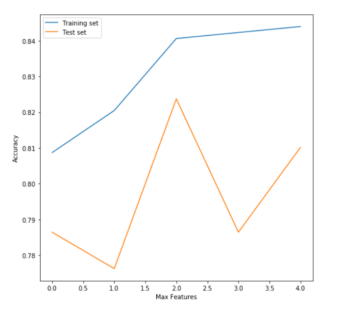
setelah pengecekan akurasi dari data tersebut maka langsung saja kita cari pohon keputusan sesuai akurasi yang sudah di hitung tadi
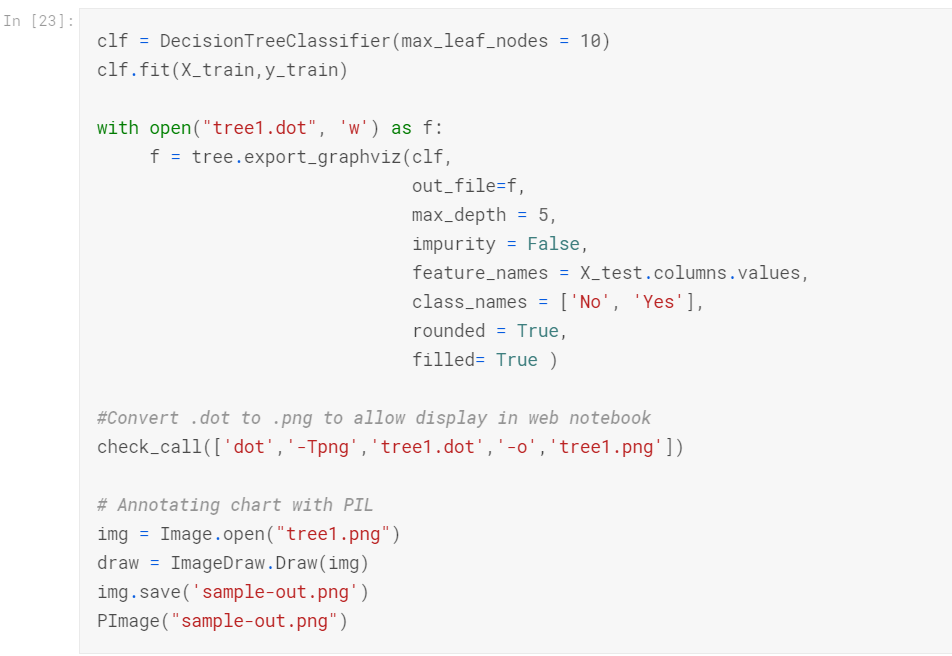
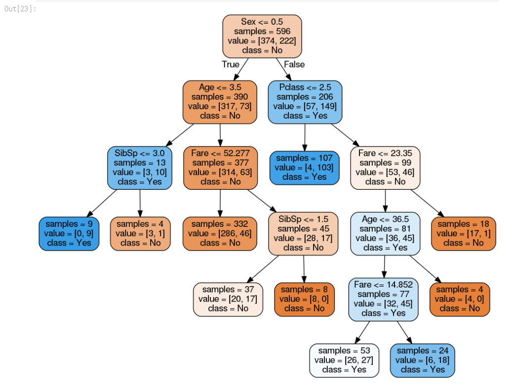
gambar diatas adalah hasil akhir pembuatan pohon keputusan dari dataset titanic dengan merubah gender ke angka binary hingga pengecekan akurasi kemudian ditemukan pohon keputusan seperti yang ada diatas